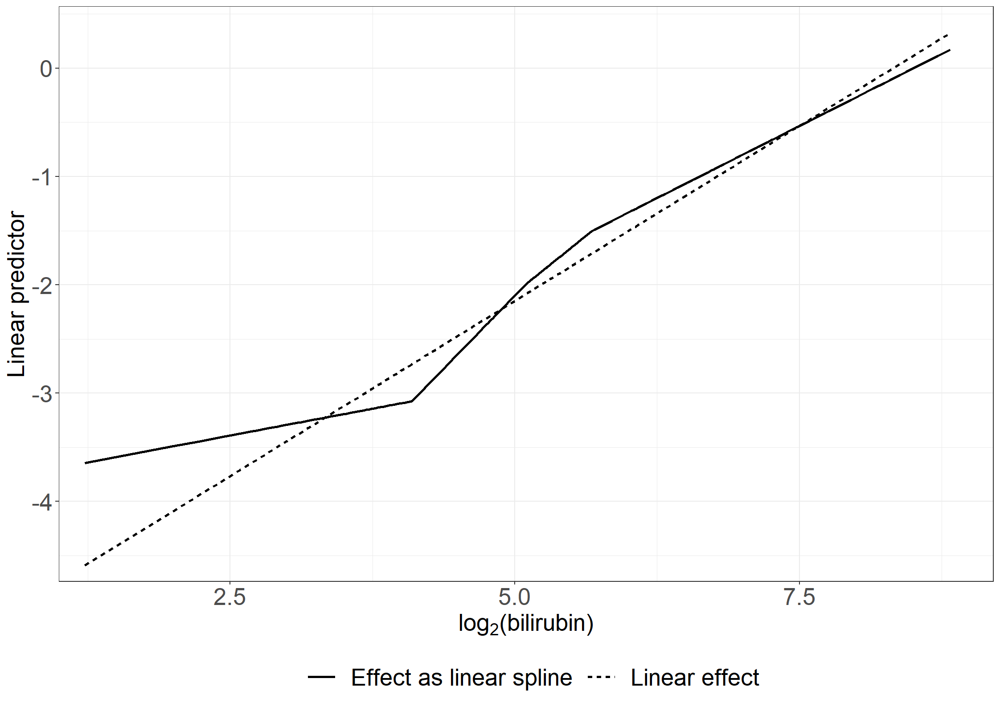

# Fit a Cox model using the pbc3 data with treatment as a covariatelibrary(survival)coxfit <-coxph(Surv(days, status !=0) ~ tment, data = pbc3, method ="breslow")coxfit
Call:
coxph(formula = Surv(days, status != 0) ~ tment, data = pbc3,
method = "breslow")
coef exp(coef) se(coef) z p
tment -0.05854 0.94314 0.21092 -0.278 0.781
Likelihood ratio test=0.08 on 1 df, p=0.7813
n= 349, number of events= 90
Code show/hide
proc phreg data=pbc3; model days*status(0)=tment/rl;run;
# Average covariate values of albumin and bilirubin per treatment library(dplyr)tabledata <- pbc3 %>%group_by(tment, tment_char) %>%summarise(n =sum(id !=0), average_albumin =mean(alb, na.rm =TRUE), # NOTE: Removes missing observations from mean computationaverage_bilirubin =mean(bili, na.rm =TRUE), )data.frame(tabledata)
# Cox model with treatment, albumin and bilirubin as covariates library(survival)coxfit <-coxph(Surv(days, status !=0) ~ tment + alb + bili,data = pbc3)coxfit
Call:
coxph(formula = Surv(days, status != 0) ~ tment + alb + bili,
data = pbc3)
coef exp(coef) se(coef) z p
tment -0.4965639 0.6086184 0.2256162 -2.201 0.0277
alb -0.1156596 0.8907784 0.0212810 -5.435 5.48e-08
bili 0.0089494 1.0089895 0.0009801 9.131 < 2e-16
Likelihood ratio test=99.06 on 3 df, p=< 2.2e-16
n= 343, number of events= 88
(6 observations deleted due to missingness)
Code show/hide
proc phreg data=pbc3; model days*status(0)=tment alb bili / rl;run;
In-text: Poisson model with treatment only (and time)
library(stats)library(broom) # For using tidy() function to get exp(beta)poism <-glm(fail ~ tment + timegroup-1+offset(log(risktime/365.25)), data = pbc3mult,family = poisson)tidy(poism, exponentiate = T, conf.int = T)
# Poisson model with treatment, albumin and bilirubin as covariatespoismod_t25 <-glm(fail ~ tment + alb + bili+ timegroup-1+offset(log(risktime/365.25)),data=pbc3mult,family=poisson)tidy(poismod_t25)
** Cox models **;* Base models for LR tests; proc phreg data=pbc3; class tment (ref='0'); model days*status(0)=tment alb bili/rl ties=breslow CONVERGELIKE=1E-8type3(lr);run;proc phreg data=pbc3; class tment (ref='0'); model days*status(0)=tment alb log2bili/rl ties=breslow CONVERGELIKE=1E-8type3(lr);run;* Splines Cox 1; * LRT can here be read of type3 test result; proc phreg data=pbc3; class tment (ref='0'); model days*status(0)=tment alb albnorm bili/rl ties=breslow CONVERGELIKE=1E-8type3(lr);run;* Quadratic Cox 1; * LRT can here be read of type3 test result; proc phreg data=pbc3; alb2=alb*alb; class tment (ref='0'); model days*status(0)=tment alb10 alb2 bili100/rl type3(LR);run;* Splines Cox 2;proc phreg data=pbc3; class tment (ref='0'); model days*status(0)=tment alb bili bilihigh bilitoohigh bilimuchtoohigh/rl type3(lr) ties=breslow CONVERGELIKE=1E-8; Wald_same_as_LRT: test bilihigh=bilitoohigh=bilimuchtoohigh=0;run;* LRT; data p; chi2=826.830-802.434; p=1-probchi(chi2,3);proc print;run;* Quadratic Cox 2; * LRT can here be read of type3 test result; proc phreg data=pbc3; bili2=bili*bili; class tment (ref='0'); model days*status(0)=tment alb10 bili bili2 / rl type3(LR);run;* Splines Cox 3;proc phreg data=pbc3; class tment (ref='0'); model days*status(0)=tment alb log2bili logbilihigh logbilitoohigh logbilimuchtoohigh/rl ties=breslow CONVERGELIKE=1E-8; Wald_same_as_LRT: test logbilihigh=logbilitoohigh=logbilimuchtoohigh=0;run;* LRT; data p; chi2=805.881-804.267; p=1-probchi(chi2,3);proc print;run;* Quadratic Cox 3; * LRT can here be read of type3 test result; proc phreg data=pbc3; class tment (ref='0'); model days*status(0)=tment alb10 log2bili log2bili2/rl type3(LR);run;* Split data into timegroups for Poisson models; data pbc3mult; set pbc3; fail=(days<=2*365.25)*(status ne 0); risktime=min(2*365.25,days); logrisk=log(risktime); interv=1; output; if days>2*365.25 then do; fail=(days<=4*365.25)*(status ne 0); risktime=min(2*365.25,days-2*365.25); logrisk=log(risktime); interv=2; output; end;if days>4*365.25 then do; fail=status ne 0; risktime=days-4*365.25; logrisk=log(risktime); interv=3; output; end;run;** Possion models **;* Models to compare with for the LR tests; proc genmod data=pbc3mult; class tment (ref='0') interv; model fail= interv tment alb bili/ dist=poi offset=logrisk type3;run;proc genmod data=pbc3mult; class tment (ref='0') interv; model fail= interv tment alb log2bili/ dist=poi offset=logrisk type3;run;* Splines Poisson 1; * LRT can here be read of type3 test result; proc genmod data=pbc3mult; class tment (ref='0') interv; model fail= interv tment alb albnorm bili/ dist=poi offset=logrisk type3;run;* Quadratic Poisson 1;* LRT can here be read of type3 test result; proc genmod data=pbc3mult; class tment (ref='0') interv; model fail= interv tment alb10 alb2 bili100/ dist=poi offset=logrisk type3;run;* Splines Poisson 2; proc genmod data=pbc3mult; class tment (ref='0') interv; model fail= interv tment alb bili bilihigh bilitoohigh bilimuchtoohigh/ dist=poi offset=logrisk type3;run;* LRT; data p; chi2=350.7253-326.1805; p=1-probchi(chi2,3);proc print;run;* Quadratic Poisson 2;* LRT can here be read of type3 test result; proc genmod data=pbc3mult; class tment (ref='0') interv; model fail= interv tment alb10 bili100 bili2/ dist=poi offset=logrisk type3;run;* Splines Poisson 3;proc genmod data=pbc3mult; class tment (ref='0') interv; model fail= interv tment alb log2bili logbilihigh logbilitoohigh logbilimuchtoohigh / dist=poi offset=logrisk type3;run;* LRT; data p; chi2=329.2509-327.5375; p=1-probchi(chi2,3);proc print;run;* Quadratic Poisson 3;* LRT can here be read of type3 test result; proc genmod data=pbc3mult; class tment (ref='0') interv; model fail= interv tment alb10 log2bili log2bili2/ dist=poi offset=logrisk type3;run;
# The below linear predictors include estimates from the following modelsbase_poismod2_log <-glm(fail ~offset(log(risktime)) +as.factor(timegroup) + tment_char + alb + log2bili,data = pbc3mult, family = poisson)poismod_t26_l3 <-glm(fail ~offset(log(risktime)) +as.factor(timegroup) + tment_char + alb + log2bili + logbilihigh + logbilitoohigh + logbilimuchtoohigh,data = pbc3mult, family = poisson)# Make a dataset with linear predictor informationlog2 <- pbc3log2$lp3 <-with(pbc3, -2.0162+0.6469*log2bili-38.7*0.087)log2$lp4 <-with(pbc3, -0.6194+0.198*log2bili+0.8815*logbilihigh-0.2336*logbilitoohigh-0.3139*logbilimuchtoohigh-0.0844*38.7)log2row <-data.frame(effect =c(rep("Linear effect", nrow(log2)),rep("Effect as linear spline", nrow(log2))), lp =c(log2$lp3, log2$lp4),log2bili =c(log2$log2bili, log2$log2bili) )fig2.8<-ggplot(aes(x = log2bili, y = lp, linetype = effect), data = log2row) +geom_line(size =1) +xlab(expression(log[2] *"(bilirubin)")) +ylab("Linear predictor") +scale_linetype_discrete("Effect") +scale_x_continuous(expand =expansion(mult =c(0.03, 0.05))) +scale_y_continuous(expand =expansion(mult =c(0.03, 0.05))) + theme_generalfig2.8

Code show/hide
* Linear predictors from the following models; proc genmod data=pbc3mult; class tment (ref='0') interv; model fail= interv tment alb log2bili / dist=poi offset=logrisk type3;run;proc genmod data=pbc3mult; class tment (ref='0') interv; model fail= interv tment alb log2bili logbilihigh logbilitoohigh logbilimuchtoohigh / dist=poi offset=logrisk type3;run;* Create data with linear predictors as a function of bilirubin values; data log2; set pbc3; lp3=-2.0162+0.6469*log2bili-38.7*0.087; lp4=-0.6194+0.198*log2bili+0.8815*logbilihigh-0.2336*logbilitoohigh-0.3139*logbilimuchtoohigh-0.0844*38.7;run; proc sort data=log2;by bili; run;proc gplot data=log2;plot (lp4 lp3)*log2bili/overlay haxis=axis1 vaxis=axis2 legend=legend1; axis1 order=1 to 9 by 1 minor=none label=('log2(Se-bilirubin)'); axis2 order=-5 to 1 by 1 minor=none label=(a=90'Linear predictor'); symbol1 v=none i=join r=1 c=red; symbol2 v=none i=join r=1 c=blue; label lp4="Effect as linear spline"; label lp3="Linear effect";run;quit;
data covstr; alb=0; log2bili=0;run;proc phreg data=pbc3; model days*status(0)= alb log2bili/rl; strata tment; baseline out=breslowstr cumhaz=breslow covariates=covstr;run;data breslow0; set breslowstr; if tment=0; a00=breslow; run;data breslow1; set breslowstr; if tment=1; a01=breslow; run;data breslow01; merge breslow0 breslow1; by days; run;data breslowrev; set breslow01; by days; retain last1 last2;if a00=. then cumhaz0=last1; if a00 ne . then cumhaz0=a00; if a01=. then cumhaz1=last2; if a01 ne . then cumhaz1=a01; output; last1=cumhaz0; last2=cumhaz1; run;data breslowrev; set breslowrev; line=exp(-0.574)*cumhaz0;run;proc gplot data=breslowrev; plot cumhaz1*cumhaz0 line*cumhaz0/haxis=axis1 vaxis=axis2 overlay; axis1 order=0 to 1.5 by 0.5 minor=none label=('Cumulative baseline hazard: placebo'); axis2 order=0 to 1 by 0.5 minor=none label=(a=90'Cumulative baseline hazard: CyA'); symbol1 v=none i=stepjl c=red; symbol2 v=none i=rl c=blue;run;quit;
# Additive Aalen models - available with timereglibrary(timereg)nonparmod <-aalen(Surv(days, status !=0) ~ tment, data = pbc3)summary(nonparmod)
Additive Aalen Model
Test for nonparametric terms
Test for non-significant effects
Supremum-test of significance p-value H_0: B(t)=0
(Intercept) 5.96 0.000
tment 1.60 0.714
Test for time invariant effects
Kolmogorov-Smirnov test p-value H_0:constant effect
(Intercept) 0.107 0.565
tment 0.136 0.648
Cramer von Mises test p-value H_0:constant effect
(Intercept) 7.62 0.444
tment 4.54 0.730
Call:
aalen(formula = Surv(days, status != 0) ~ tment, data = pbc3)
Code show/hide
cumhazdata <-data.frame(eventtimes = nonparmod$cum[,1],basecumhaz = nonparmod$cum[,2], cumhaztreat = nonparmod$cum[,3], cumhaztreat_ll = nonparmod$cum[,3]-1.96*sqrt(nonparmod$var.cum[,3]),cumhaztreat_ul = nonparmod$cum[,3]+1.96*sqrt(nonparmod$var.cum[,3]))# Extend lines to last observed timecumhazdata[nrow(cumhazdata)+1,] <-c(max(pbc3$days), tail(cumhazdata, 1)[-1])# Left figurefig2.11.left <-ggplot(aes(x = eventtimes /365.25, y = basecumhaz), data = cumhazdata) +geom_step(size =1) +xlab("Time since randomization (years)") +ylab("Cumulative baseline hazard") +scale_x_continuous(expand =expansion(mult =c(0.03, 0.05)), limits =c(0, 6),breaks =seq(0, 6, 1)) +scale_y_continuous(expand =expansion(mult =c(0.03, 0.05))) + theme_generalfig2.11.left
#------------------------------------------------------------------## Table 2.10 and in-text results#------------------------------------------------------------------## Additive model treatment only# p-values not exactly as in book because seed changesnonparmod0 <-aalen(Surv(days, status !=0) ~ tment, data = pbc3) summary(nonparmod0)
Additive Aalen Model
Test for nonparametric terms
Test for non-significant effects
Supremum-test of significance p-value H_0: B(t)=0
(Intercept) 5.96 0.000
tment 1.60 0.736
Test for time invariant effects
Kolmogorov-Smirnov test p-value H_0:constant effect
(Intercept) 0.107 0.571
tment 0.136 0.649
Cramer von Mises test p-value H_0:constant effect
(Intercept) 7.62 0.434
tment 4.54 0.741
Call:
aalen(formula = Surv(days, status != 0) ~ tment, data = pbc3)
Code show/hide
# Constant effect of treatment per yearnonparmod01 <-aalen(Surv(days/365.25, status !=0) ~const(tment), data = pbc3) summary(nonparmod01)
Additive Aalen Model
Test for nonparametric terms
Test for non-significant effects
Supremum-test of significance p-value H_0: B(t)=0
(Intercept) 6.62 0
Test for time invariant effects
Kolmogorov-Smirnov test p-value H_0:constant effect
(Intercept) 0.0914 0.406
Cramer von Mises test p-value H_0:constant effect
(Intercept) 0.0136 0.276
Parametric terms :
Coef. SE Robust SE z P-val lower2.5% upper97.5%
const(tment) -0.00587 0.021 0.021 -0.28 0.779 -0.047 0.0353
Call:
aalen(formula = Surv(days/365.25, status != 0) ~ const(tment),
data = pbc3)
Code show/hide
# Additive model with treatment, albumin, bilirubin# Table 2.10, first two columns# p-values not exactly as in book because seed changesnonparmod1 <-aalen(Surv(days, status !=0) ~ tment + alb + bili, data = pbc3) summary(nonparmod1)
Additive Aalen Model
Test for nonparametric terms
Test for non-significant effects
Supremum-test of significance p-value H_0: B(t)=0
(Intercept) 3.62 0.007
tment 2.66 0.128
alb 3.82 0.005
bili 4.83 0.000
Test for time invariant effects
Kolmogorov-Smirnov test p-value H_0:constant effect
(Intercept) 0.30300 0.942
tment 0.12100 0.705
alb 0.00666 0.963
bili 0.00301 0.175
Cramer von Mises test p-value H_0:constant effect
(Intercept) 14.20000 0.992
tment 3.29000 0.797
alb 0.00826 0.991
bili 0.00203 0.316
Call:
aalen(formula = Surv(days, status != 0) ~ tment + alb + bili,
data = pbc3)
Code show/hide
# Constant effects per year# Table 2.10, last columnsnonparmod2 <-aalen(Surv(days/365.25, status !=0) ~const(tment) +const(alb) +const(bili), data = pbc3) summary(nonparmod2)
Additive Aalen Model
Test for nonparametric terms
Test for non-significant effects
Supremum-test of significance p-value H_0: B(t)=0
(Intercept) 4.03 0.001
Test for time invariant effects
Kolmogorov-Smirnov test p-value H_0:constant effect
(Intercept) 0.119 0.179
Cramer von Mises test p-value H_0:constant effect
(Intercept) 0.0263 0.114
Parametric terms :
Coef. SE Robust SE z P-val lower2.5% upper97.5%
const(tment) -0.04130 0.021600 0.020100 -2.05 4.02e-02 -0.08360 0.00104
const(alb) -0.00842 0.002290 0.002230 -3.77 1.63e-04 -0.01290 -0.00393
const(bili) 0.00230 0.000483 0.000384 5.98 2.17e-09 0.00135 0.00325
Call:
aalen(formula = Surv(days/365.25, status != 0) ~ const(tment) +
const(alb) + const(bili), data = pbc3)
Code show/hide
# In-text# Constant effect of treatment, adjusted for albumin and bilirubinnonparmod3 <-aalen(Surv(days/365.25, status !=0) ~const(tment) + alb + bili, data = pbc3) summary(nonparmod3)
Additive Aalen Model
Test for nonparametric terms
Test for non-significant effects
Supremum-test of significance p-value H_0: B(t)=0
(Intercept) 3.60 0.002
alb 3.80 0.001
bili 4.83 0.000
Test for time invariant effects
Kolmogorov-Smirnov test p-value H_0:constant effect
(Intercept) 0.28500 0.949
alb 0.00954 0.826
bili 0.00315 0.161
Cramer von Mises test p-value H_0:constant effect
(Intercept) 3.16e-02 0.995
alb 5.26e-05 0.919
bili 6.52e-06 0.281
Parametric terms :
Coef. SE Robust SE z P-val lower2.5% upper97.5%
const(tment) -0.0401 0.0216 0.0204 -1.97 0.049 -0.0824 0.00224
Call:
aalen(formula = Surv(days/365.25, status != 0) ~ const(tment) +
alb + bili, data = pbc3)
Code show/hide
# Quadratic effect for albumin; p-values not exactly as in book because seed changesnonparmod44 <-aalen(Surv(days/365.25, status !=0) ~const(tment)+I(alb/10) +I(bili/100) +I((alb/10)^2), data = pbc3) summary(nonparmod44)
Additive Aalen Model
Test for nonparametric terms
Test for non-significant effects
Supremum-test of significance p-value H_0: B(t)=0
(Intercept) 3.23 0.019
I(alb/10) 3.00 0.039
I(bili/100) 4.88 0.000
I((alb/10)^2) 2.77 0.084
Test for time invariant effects
Kolmogorov-Smirnov test p-value H_0:constant effect
(Intercept) 9.420 0.250
I(alb/10) 4.950 0.255
I(bili/100) 0.365 0.071
I((alb/10)^2) 0.635 0.258
Cramer von Mises test p-value H_0:constant effect
(Intercept) 83.6000 0.367
I(alb/10) 24.4000 0.355
I(bili/100) 0.0949 0.179
I((alb/10)^2) 0.4160 0.350
Parametric terms :
Coef. SE Robust SE z P-val lower2.5% upper97.5%
const(tment) -0.0421 0.0215 0.0201 -2.09 0.0366 -0.0842 3.92e-05
Call:
aalen(formula = Surv(days/365.25, status != 0) ~ const(tment) +
I(alb/10) + I(bili/100) + I((alb/10)^2), data = pbc3)
Code show/hide
# Quadratic effect for bilirubin; p-values not exactly as in book as seed changesnonparmod43 <-aalen(Surv(days/365.25, status !=0) ~const(tment)+I(alb/10) +I(bili/100) +I((bili/100)^2), data = pbc3) summary(nonparmod43)
Additive Aalen Model
Test for nonparametric terms
Test for non-significant effects
Supremum-test of significance p-value H_0: B(t)=0
(Intercept) 3.82 0.001
I(alb/10) 4.02 0.001
I(bili/100) 3.85 0.001
I((bili/100)^2) 3.01 0.046
Test for time invariant effects
Kolmogorov-Smirnov test p-value H_0:constant effect
(Intercept) 0.440 0.674
I(alb/10) 0.117 0.621
I(bili/100) 0.612 0.446
I((bili/100)^2) 0.515 0.162
Cramer von Mises test p-value H_0:constant effect
(Intercept) 0.1320 0.742
I(alb/10) 0.0124 0.609
I(bili/100) 0.4640 0.326
I((bili/100)^2) 0.2880 0.166
Parametric terms :
Coef. SE Robust SE z P-val lower2.5% upper97.5%
const(tment) -0.0395 0.0213 0.0208 -1.89 0.0582 -0.0812 0.00225
Call:
aalen(formula = Surv(days/365.25, status != 0) ~ const(tment) +
I(alb/10) + I(bili/100) + I((bili/100)^2), data = pbc3)
library(survival)# Cox model in column 1coxfit0 <-coxph(Surv(fuptime, dead) ~ bcg, data = bissau, method ="breslow")coxfit0
Call:
coxph(formula = Surv(fuptime, dead) ~ bcg, data = bissau, method = "breslow")
coef exp(coef) se(coef) z p
bcg -0.2821 0.7542 0.1353 -2.085 0.0371
Likelihood ratio test=4.28 on 1 df, p=0.03851
n= 5274, number of events= 222
Code show/hide
# Cox model in column 1coxfit1 <-coxph(Surv(fuptime, dead) ~ bcg + agem, data = bissau, method ="breslow")coxfit1
Call:
coxph(formula = Surv(fuptime, dead) ~ bcg + agem, data = bissau,
method = "breslow")
coef exp(coef) se(coef) z p
bcg -0.35203 0.70326 0.14424 -2.441 0.0147
agem 0.05376 1.05523 0.03856 1.394 0.1633
Likelihood ratio test=6.21 on 2 df, p=0.04481
n= 5274, number of events= 222
Code show/hide
# Make age the time variable insteadbissau$agein <- bissau$age/(365.24/12)bissau$ageout <- bissau$agein + bissau$fuptime/(365.24/12)# Cox model in column 2# option timefix=F aligns to SAS calculation# see vignette 'Roundoff error and tied times' for survival packagecoxfit2 <-coxph(Surv(agein, ageout, dead) ~ bcg, data = bissau, method ="breslow",timefix=F)coxfit2
Call:
coxph(formula = Surv(agein, ageout, dead) ~ bcg, data = bissau,
method = "breslow", timefix = F)
coef exp(coef) se(coef) z p
bcg -0.3558 0.7006 0.1407 -2.529 0.0114
Likelihood ratio test=6.28 on 1 df, p=0.01218
n= 5274, number of events= 222
Code show/hide
proc phreg data=bissau; model fuptime*dead(0)=bcg agem / rl;run;* Make age the time variable instead;data bissau; set bissau; agein=age/(365.24/12); ageout=agein+fuptime/(365.24/12);run;* Cox model fit - column 2; proc phreg data=bissau; model ageout*dead(0)=bcg / entry=agein rl;run;
# Cox model for 1., 2., 3., 4. episode 'Markov': Column 1library(survival)coxph(Surv(start, stop, status ==1) ~ bip, method ="breslow",data =subset(affective, episode ==1& state ==0))
Call:
coxph(formula = Surv(start, stop, status == 1) ~ bip, data = subset(affective,
episode == 1 & state == 0), method = "breslow")
coef exp(coef) se(coef) z p
bip 0.3552 1.4264 0.2500 1.421 0.155
Likelihood ratio test=1.89 on 1 df, p=0.1692
n= 116, number of events= 99
Code show/hide
coxph(Surv(start, stop, status ==1) ~ bip, method ="breslow",data =subset(affective, episode ==2& state ==0))
Call:
coxph(formula = Surv(start, stop, status == 1) ~ bip, data = subset(affective,
episode == 2 & state == 0), method = "breslow")
coef exp(coef) se(coef) z p
bip 0.1890 1.2080 0.2604 0.726 0.468
Likelihood ratio test=0.51 on 1 df, p=0.4751
n= 91, number of events= 82
Code show/hide
coxph(Surv(start, stop, status ==1) ~ bip, method ="breslow",data =subset(affective, episode ==3& state ==0))
Call:
coxph(formula = Surv(start, stop, status == 1) ~ bip, data = subset(affective,
episode == 3 & state == 0), method = "breslow")
coef exp(coef) se(coef) z p
bip -0.1175 0.8891 0.3005 -0.391 0.696
Likelihood ratio test=0.16 on 1 df, p=0.6936
n= 74, number of events= 62
Code show/hide
coxph(Surv(start, stop, status ==1) ~ bip, method ="breslow",data =subset(affective, episode ==4& state ==0))
Call:
coxph(formula = Surv(start, stop, status == 1) ~ bip, data = subset(affective,
episode == 4 & state == 0), method = "breslow")
coef exp(coef) se(coef) z p
bip 1.1500 3.1581 0.3536 3.252 0.00114
Likelihood ratio test=9.93 on 1 df, p=0.001623
n= 56, number of events= 47
Code show/hide
# Cox model for 1., 2., 3., 4. episode 'Gap time': Column 2coxph(Surv(wait, status ==1) ~ bip, method ="breslow",data =subset(affective, episode ==1& state ==0))
Call:
coxph(formula = Surv(wait, status == 1) ~ bip, data = subset(affective,
episode == 1 & state == 0), method = "breslow")
coef exp(coef) se(coef) z p
bip 0.3991 1.4905 0.2487 1.605 0.109
Likelihood ratio test=2.39 on 1 df, p=0.1222
n= 116, number of events= 99
Code show/hide
coxph(Surv(wait, status ==1) ~ bip, method ="breslow",data =subset(affective, episode ==2& state ==0))
Call:
coxph(formula = Surv(wait, status == 1) ~ bip, data = subset(affective,
episode == 2 & state == 0), method = "breslow")
coef exp(coef) se(coef) z p
bip 0.2165 1.2418 0.2579 0.84 0.401
Likelihood ratio test=0.68 on 1 df, p=0.41
n= 91, number of events= 82
Code show/hide
coxph(Surv(wait, status ==1) ~ bip, method ="breslow",data =subset(affective, episode ==3& state ==0))
Call:
coxph(formula = Surv(wait, status == 1) ~ bip, data = subset(affective,
episode == 3 & state == 0), method = "breslow")
coef exp(coef) se(coef) z p
bip -0.1114 0.8946 0.2867 -0.389 0.698
Likelihood ratio test=0.15 on 1 df, p=0.6953
n= 74, number of events= 62
Code show/hide
coxph(Surv(wait, status ==1) ~ bip, method ="breslow",data =subset(affective, episode ==4& state ==0))
Call:
coxph(formula = Surv(wait, status == 1) ~ bip, data = subset(affective,
episode == 4 & state == 0), method = "breslow")
coef exp(coef) se(coef) z p
bip 0.5964 1.8155 0.3183 1.874 0.061
Likelihood ratio test=3.31 on 1 df, p=0.06905
n= 56, number of events= 47
Code show/hide
# AG cox model, total timecoxph(Surv(start, stop, status ==1) ~ bip, method ="breslow",data =subset(affective, state ==0))
Call:
coxph(formula = Surv(start, stop, status == 1) ~ bip, data = subset(affective,
state == 0), method = "breslow")
coef exp(coef) se(coef) z p
bip 0.36593 1.44186 0.09448 3.873 0.000107
Likelihood ratio test=14.24 on 1 df, p=0.0001612
n= 626, number of events= 542
Code show/hide
# AG cox model, gap timecoxph(Surv(wait, status ==1) ~ bip, method ="breslow",data =subset(affective, state ==0))
Call:
coxph(formula = Surv(wait, status == 1) ~ bip, data = subset(affective,
state == 0), method = "breslow")
coef exp(coef) se(coef) z p
bip 0.12555 1.13377 0.09445 1.329 0.184
Likelihood ratio test=1.74 on 1 df, p=0.1875
n= 626, number of events= 542
Code show/hide
# PWP cox model, total timecoxph(Surv(start, stop, status ==1) ~strata(episode) + bip, method ="breslow",data =subset(affective, state ==0))
Call:
coxph(formula = Surv(start, stop, status == 1) ~ strata(episode) +
bip, data = subset(affective, state == 0), method = "breslow")
coef exp(coef) se(coef) z p
bip 0.2418 1.2736 0.1121 2.157 0.031
Likelihood ratio test=4.54 on 1 df, p=0.03312
n= 626, number of events= 542
Code show/hide
# PWP cox model, gap timecoxph(Surv(wait, status ==1) ~strata(episode) + bip, method ="breslow", data =subset(affective, state ==0))
Call:
coxph(formula = Surv(wait, status == 1) ~ strata(episode) + bip,
data = subset(affective, state == 0), method = "breslow")
coef exp(coef) se(coef) z p
bip 0.02781 1.02820 0.10040 0.277 0.782
Likelihood ratio test=0.08 on 1 df, p=0.7821
n= 626, number of events= 542
Code show/hide
proc sort data=affective out=state0; where state=0; by state episode;run;* Cox model for1., 2., 3., 4. episode 'Markov': Column 1; proc phreg data=state0; where episode<=4; model stop*status (23)= bip / entry=start; by episode;run;* AG model, no past; proc phreg data=state0; model stop*status (23)= bip / entry=start;run;* PWP model; proc phreg data=state0; model stop*status (23)= bip / entry=start; strata episode;run; * Cox model for1., 2., 3., 4. episode 'Gap time': Column 2; proc phreg data=state0; where episode<=4; model wait*status (23)= bip; by episode;run;* AG gap time model; proc phreg data=state0; model wait*status (23)= bip;run;* PWP gap time model; proc phreg data=state0; model wait*status (23)= bip; strata episode;run;
# Assume that LEADER data is loaded in data set leader# One data set per recurrent endpoint typeleader_mi <-subset(leader, type =="recurrent_mi")leader_3p <-subset(leader, type =="recurrent_comb_str_mi_cvdth")
# Cox model first eventslibrary(survival)coxph(Surv(start, stop, status ==1) ~ treat,data =subset(leader_mi, eventno ==1), method ="breslow",)
Call:
coxph(formula = Surv(start, stop, status == 1) ~ treat, data = subset(leader_mi,
eventno == 1), method = "breslow")
coef exp(coef) se(coef) z p
treat -0.15949 0.85258 0.07984 -1.998 0.0458
Likelihood ratio test=4 on 1 df, p=0.04545
n= 9340, number of events= 631
Code show/hide
# AG Cox typecoxph(Surv(start, stop, status ==1) ~ treat, data = leader_mi,method ="breslow")
Call:
coxph(formula = Surv(start, stop, status == 1) ~ treat, data = leader_mi,
method = "breslow")
coef exp(coef) se(coef) z p
treat -0.16418 0.84859 0.07184 -2.285 0.0223
Likelihood ratio test=5.24 on 1 df, p=0.02208
n= 10120, number of events= 780
Code show/hide
# AG model, piece-wise constant hazards# Calculating cuts -> 5alltimes <-seq(0,max(leader_mi$stop),length=99)FunctionIntervalM <-function(a,b) {seq(from=min(a), to =max(a), by = (max(a)-min(a))/b)}cuts <-FunctionIntervalM(a = alltimes, b =5)cut_data <-survSplit(Surv(start, stop, status ==1) ~ ., leader_mi,cut = cuts[-1],episode ="timegroup")coxph(Surv(start, stop, event) ~ treat +strata(timegroup), data = cut_data)
Call:
coxph(formula = Surv(start, stop, event) ~ treat + strata(timegroup),
data = cut_data)
coef exp(coef) se(coef) z p
treat -0.16418 0.84859 0.07184 -2.285 0.0223
Likelihood ratio test=5.24 on 1 df, p=0.02207
n= 39070, number of events= 780